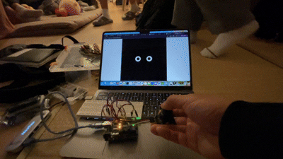
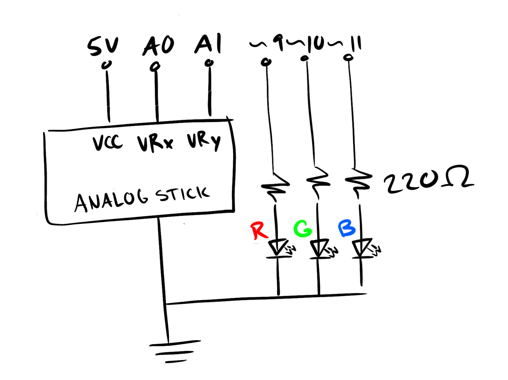
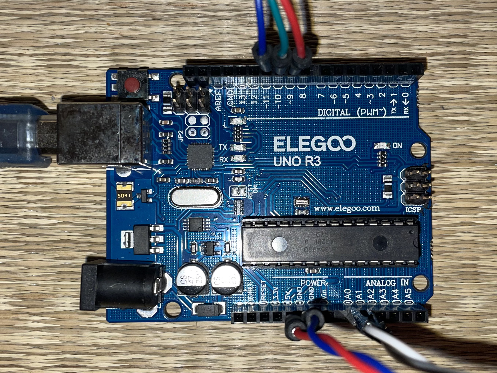
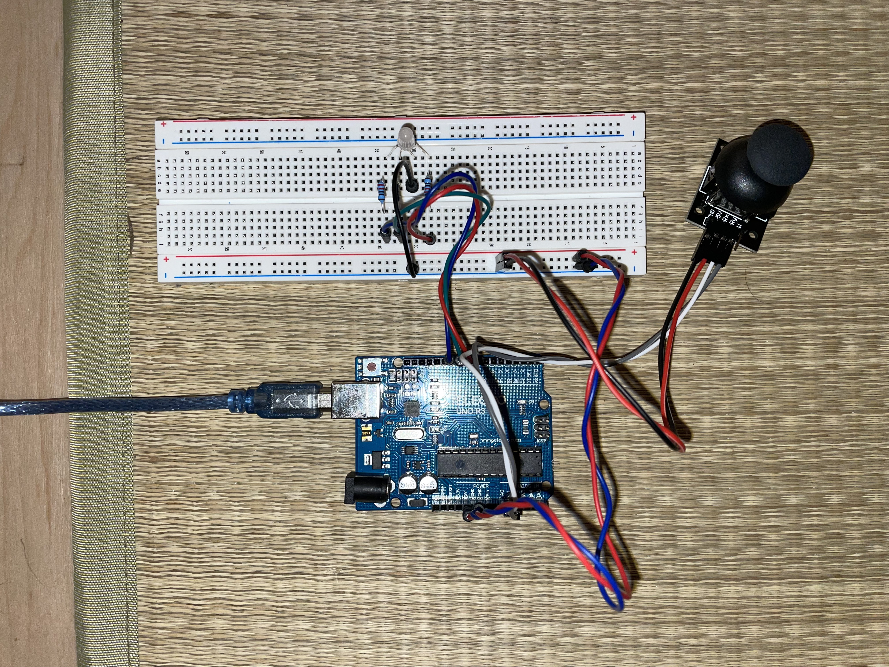
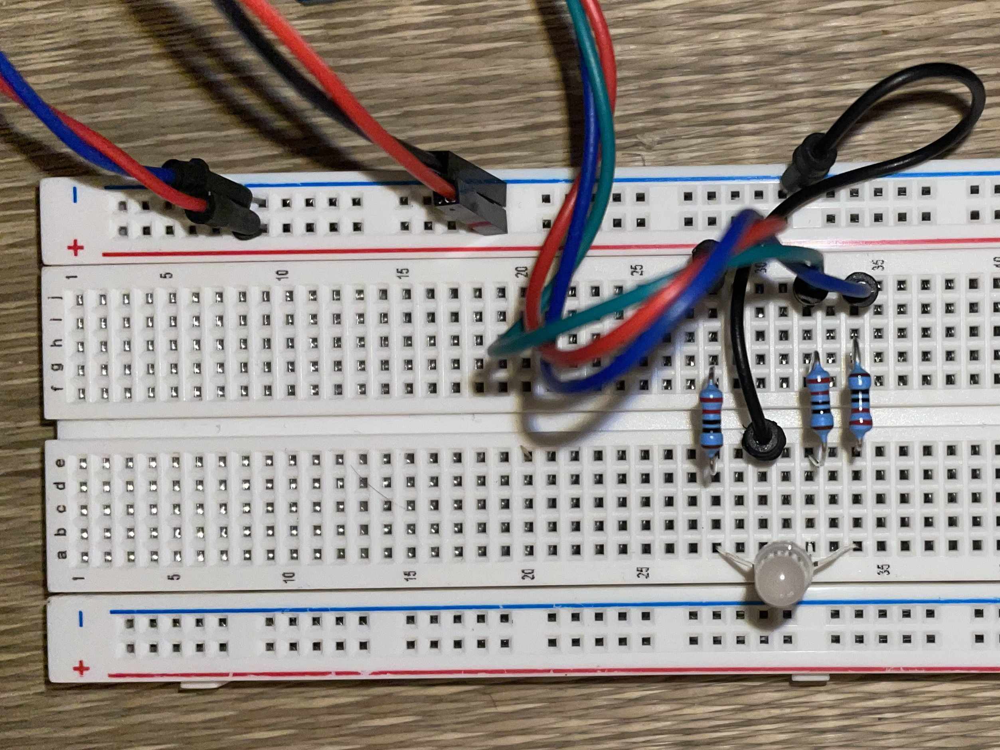

This project uses a joystick to control animated eyes that follow your joystick movements. When you let go of the joystick (it returns to center), the eyes look straight ahead. An RGB LED lights up when the joystick is moved, changing colors based on direction, and turns off when centered.
Click the button below to connect to your Arduino, then move the joystick to control the eyes.





Joystick analogRead() values: The joystick returns values from 0-1023 on each axis. The center position is approximately 512. When pushed left, X reads ~0; when pushed right, X reads ~1023. When pushed up, Y reads ~0; when pushed down, Y reads ~1023. These raw values are sent to p5.js via serial communication.
RGB LED Resistor Calculation: Using Ohm's Law for each color channel: R = (V_supply - V_led) / I_led = (5V - 2V) / 0.015A = 200Ω. I used standard 220Ω resistors for all three channels (red, green, blue).
Detecting joystick movement: I defined a "deadzone" of 50 units around the center value (512). If joyX or joyY values fall outside the range of 462-562, the joystick is considered "in use" and the RGB LED lights up. When values return to the deadzone, the LED turns off and the eyes look straight ahead.
Mapping joystick to screen coordinates: In p5.js, I mapped the joystick values (0-1023) to the canvas size (0-400 pixels) using the map() function. This allows smooth tracking across the entire screen. When the joystick is centered, the target coordinates default to the center of the canvas (200, 200), making the eyes look straight ahead.
RGB color logic: The LED color changes based on direction: moving right increases red, moving left increases blue, and vertical movement adds green. This creates intuitive visual feedback for joystick direction.
// pin definitions
int joyX = A0;
int joyY = A1;
int redPin = 9;
int greenPin = 10;
int bluePin = 11;
void setup() {
// initialize serial communication at 9600 baud rate
Serial.begin(9600);
pinMode(redPin, OUTPUT);
pinMode(greenPin, OUTPUT);
pinMode(bluePin, OUTPUT);
}
void loop() {
// Read analog value from joystick on both axis (0-1023)
int xVal = analogRead(joyX);
int yVal = analogRead(joyY);
// send joystick X value to p5.js
Serial.print(xVal);
// send comma separator
Serial.print(",");
// send joystick Y value to p5.js and add newline
Serial.println(yVal);
if (Serial.available()) {
// if new data available, read the incoming command string until newline
String command = Serial.readStringUntil('\n');
// "RGB,r,g,b" where r,g,b are 0-255 to control LED color
if (command.startsWith("RGB")) {
int firstComma = command.indexOf(',');
int secondComma = command.indexOf(',', firstComma + 1);
int thirdComma = command.indexOf(',', secondComma + 1);
// red value from substring and convert to integer
int r = command.substring(firstComma + 1, secondComma).toInt();
// green value
int g = command.substring(secondComma + 1, thirdComma).toInt();
// blue value
int b = command.substring(thirdComma + 1).toInt();
// write color values
analogWrite(redPin, r);
analogWrite(greenPin, g);
analogWrite(bluePin, b);
}
}
delay(50);
}
// variables for joystick position
// starting at center values (512 is middle of 0-1023 range)
let joyX = 512;
let joyY = 512;
// deadzone threshold for joystick center position
const DEADZONE = 50;
// center position of joystick
const CENTER = 512;
// web Serial variables
let port;
let connectBtn;
// baud rate must match arduino
const BAUD_RATE = 9600;
function setup() {
// create a 400x400 pixel canvas
let canvas = createCanvas(400, 400);
// put canvas in the canvas-container div
canvas.parent('canvas-container');
// use RGB color mode
colorMode(RGB);
// set angle mode to degrees for easier angle calculations
angleMode(DEGREES);
// initialize web serial connection
setupSerial();
}
function draw() {
// set black background
background(0);
// read data from Arduino via serial port
if (port && port.available()) {
// read until newline character and remove whitespace
let data = port.readUntil("\n").trim();
// split the comma-separated values into an array
let values = data.split(",");
// check that we received both values
if (values.length === 2) {
// parse X joystick value from string to integer
joyX = int(values[0]);
// parse Y joystick value from string to integer
joyY = int(values[1]);
// update status display
document.getElementById('status').textContent =
'Status: Connected | Joystick X: ' + joyX + ' Y: ' + joyY;
}
}
// calculate if joystick is being used (outside deadzone)
let xActive = abs(joyX - CENTER) > DEADZONE;
let yActive = abs(joyY - CENTER) > DEADZONE;
// variable to hold target coordinates
let targetX, targetY;
// if joystick is centered, eyes look straight ahead (center of canvas)
if (!xActive && !yActive) {
// Set target to center of canvas
targetX = width / 2;
targetY = height / 2;
// turn off RGB LED when centered
sendRGBCommand(0, 0, 0);
} else {
// map joystick values (0-1023) to canvas coordinates (0-400)
targetX = map(joyX, 0, 1023, 0, width);
targetY = map(joyY, 0, 1023, 0, height);
// calculate RGB values based on joystick position
// map X position to red value (right = more red)
let r = map(joyX, 0, 1023, 0, 255);
// Map Y position to green value (down = more green)
let g = map(joyY, 0, 1023, 0, 255);
// Map X position inversely to blue value (left = more blue)
let b = map(joyX, 1023, 0, 0, 255);
// constrain values to 0-255 range
r = constrain(r, 0, 255);
g = constrain(g, 0, 255);
b = constrain(b, 0, 255);
// send RGB command to Arduino with calculated color values
sendRGBCommand(r, g, b);
}
// draw the left eye
drawEye(150, 200, targetX, targetY);
// draw the right eye
drawEye(250, 200, targetX, targetY);
}
// function to draw a single eye
// eyeX, eyeY: position of the eye center
// targetX, targetY: position the eye should look at
function drawEye(eyeX, eyeY, targetX, targetY) {
// calculate angle from eye center to target position
let angle = atan2(targetY - eyeY, targetX - eyeX);
// calculate distance from eye center to target
let distance = dist(eyeX, eyeY, targetX, targetY);
// save current state
push();
// move origin to eye center
translate(eyeX, eyeY);
// draw white outer circle (eye white)
fill(255);
ellipse(0, 0, 50, 50);
// rotate to face the target angle
rotate(angle);
// map distance to pupil offset (max 12.5 pixels from center)
// if target is at eye center, offset is 0 (pupil centered)
let pupilOffset = map(distance, 0, 400, 0, 12.5);
pupilOffset = constrain(pupilOffset, 0, 12.5);
// draw black pupil with offset
fill(0);
ellipse(pupilOffset, 0, 25, 25);
// restore previous state
pop();
}
// function to send RGB color command to arduino
// r, g, b: color values from 0-255
function sendRGBCommand(r, g, b) {
if (port && port.opened()) {
let command = "RGB," + int(r) + "," + int(g) + "," + int(b) + "\n";
port.write(command);
}
}
// setup web serial connection
function setupSerial() {
port = createSerial();
// get list of previously used serial ports
let usedPorts = usedSerialPorts();
// if we've connected before, automatically reconnect
if (usedPorts.length > 0) {
// open the first previously used port
port.open(usedPorts[0], BAUD_RATE);
}
// create connect button for user to manually connect
connectBtn = createButton("Connect to Arduino");
connectBtn.parent('canvas-container');
connectBtn.mousePressed(onConnectButtonClicked);
}
// handle connect button clicks
function onConnectButtonClicked() {
// if port is not open
if (!port.opened()) {
// open the serial port at specified baud rate
port.open(BAUD_RATE);
// update button text
connectBtn.html("Disconnect");
} else {
// close the serial port
port.close();
// =update button text
connectBtn.html("Connect to Arduino");
// update status
document.getElementById('status').textContent = 'Status: Not connected';
}
}
For this assignment, I used Claude AI to help me understand how to integrate the live demonstration window on the webpage.